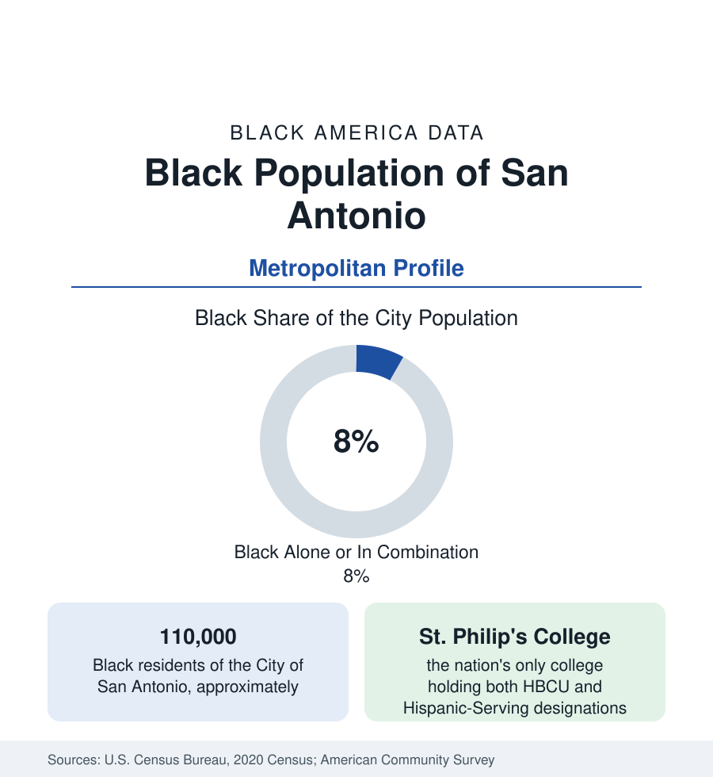

Black Cities
Black San Antonio: The East Side of Military City
San Antonio holds about 110,000 Black residents in the city and 165,000 across the metro — the east-side community of America's military capital. The census profile.

San Antonio holds about 110,000 Black residents within the city — Black alone or in combination, roughly 8 percent of its 1.43 million people — and about 165,000 across the metropolitan area. In a majority-Latino city famous as Military City USA, the Black community of the East Side is the smallest of the Texas big cities' in share and among the most institutionally distinctive, anchored by a college that holds a designation no other institution in America shares.
The East Side
Black San Antonio centers on the East Side — the districts around East Commerce Street, Denver Heights, Government Hill at Fort Sam Houston's gate, and the Dignowity Hill plateau — where the community formed around the post-Civil War army posts' labor market, the railroads, and the domestic-service economy of the King William mansions across the river. Its institutions are the profile's core: St. Philip's College, founded in 1898 as an Episcopal school for the daughters of former slaves, now a public community college of the Alamo Colleges and the only institution in the nation designated both a Historically Black College and a Hispanic-Serving Institution — a dual status that is San Antonio's demography in one accreditation line. Mount Zion First Baptist and the East Side church network, the Carver Community Cultural Center (in the old Black library branch), and the East Side's civil-rights-era political tradition complete the institutional core, now surrounded by the gentrification frontier advancing from downtown and the Pearl district.
Military City's Black Workforce
San Antonio's economy is the military's: Joint Base San Antonio — Fort Sam Houston, Lackland, Randolph, and the medical center complex (Brooke Army Medical Center is the military's flagship hospital) — is the metro's largest employer and the Black community's anchor across every dataset. Black service members, civilian employees, contractors, and retirees form an outsized share of the Black population (the veteran share runs with the other garrison metros at the top of the Texas tables), and the medical-military economy gives Black San Antonio a health-workforce depth the healthcare profile records. The civilian layers — USAA and the insurance back offices, the tourism economy, the school districts and city government — distribute the rest. Black median income runs below the other Texas metros' (the city's overall wage structure sets the level), with homeownership comparatively strong in the east and northeast suburbs on military-backed mortgages.
The Metro's Spread
The metro's Black population beyond the East Side concentrates in the northeast corridor — Converse, Kirby, Live Oak, Universal City (Randolph's suburbs, with Black shares in the teens and higher, among the most military-shaped suburbs in Texas) — and in the newer subdivisions of the far west and north inside the city limits, with Schertz and Cibolo (the Randolph corridor's growth) adding the newest layer. The composition is predominantly native-born, with the military's national mixing; the foreign-born share is the lowest of the Texas big metros'. The city's Black elected tradition — mayors, council members from the East Side district, county leadership — runs continuously through the modern era at a weight above the population share, in the garrison-city pattern.
Change and the Estimates
The estimates show slow, steady Black growth — the northeast corridor and the far west gaining, the East Side's total roughly stable with its share of the community declining as the suburbs grow — tracking the metro's overall growth at a slightly slower rate, so the city's Black share edges down gradually. The East Side's reinvestment file (the cultural center district, the arena and fairgrounds debates at the district's downtown edge) is the profile's live item, as it is in every historic-core profile in this section.
Reading the San Antonio Numbers
The cultural record is anchored by the East Side's institutions and one national figure: the city's Black musical tradition ran through the East Side's clubs and the West Side's conjunto stages alike, and San Antonio's Black culinary and church life remains centered where it formed. The San Antonio African American Community Archive at UTSA now documents the community's full record — the institutional memory work of a population whose share understates its history.
San Antonio completes the Texas set — Houston's mass, Dallas's scale, Austin's displacement, and the Alamo City's garrison community — as its quietest and most military-shaped profile. Its signature fact is institutional: one college, two designations, a whole city's demography in a single line of the federal register.
More in Black Cities
Black Atlanta: Population, Distribution, and Growth of a Black Metropolis
Metro Atlanta holds more than two million Black residents — roughly one in three, second only to New York. The suburban distribution, migration history, and composition of Black Atlanta in the census data.
Black New York: The Largest Black Population in America
The New York metropolitan area holds about 3.4 million Black residents — more than any metro in the nation — and the city itself about two million. The census profile.
Black Washington: The District and the Metro
The Washington metro holds about 1.6 million Black residents, and the District itself — long a majority-Black city — now records a Black share near 41 percent. The census profile.
Source: U.S. Census Bureau, 2020 Census; American Community Survey; Population Estimates Program.